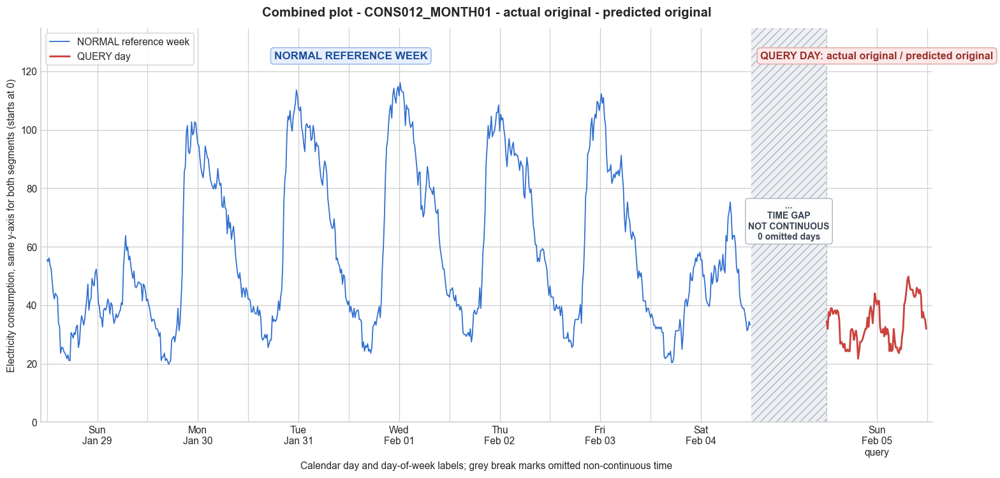

CONS012_MONTH01 · actual original · predicted original
- Pair
- CONS012_MONTH01
- GT
- original
- Prediction
- original
- Binary GT
- original
- Binary Prediction
- original
- Source
- E010R1
- Parse
- stored
- Date
- 2012-02-05
- Weekday
- Sunday
- Latency
- 4.27 min
- Tokens
- 13729

Final output
Classification: Original
Prompt
You are a domain expert in smart grid security and electricity theft analysis, with deep knowledge of non-technical loss (NTL) attack patterns in smart meters. You are given: 1. A plot of one week of original (normal) energy consumption for a smart meter, provided as context for the customer's typical consumption behavior. 2. A plot of one day of energy consumption for the same smart meter, which may or may not be manipulated. Below are common attack types, each defined by how consumption values are altered, their impact on magnitude and trend, and their possible technical causes. Attack 0: Generated by replacing all electricity consumption samples with zero values for the entire observation duration. Simulates a scenario where no energy usage is reported at all. May be caused by a total meter bypass or severe meter malfunction. Completely eliminates both the trend and magnitude of the consumption profile. Attack 1: Multiplies the actual energy consumption by a constant random value between (0,1). The lower the factor, the higher the severity. Can be triggered by meter bypass, magnetic interference, reverse current, and false data injection. The consumption trend remains the same but the magnitude is uniformly reduced. Attack 2: Generated by replacing consumption samples with zeros for a random duration. Also known as an on-off attack. Can be caused by full meter bypass, false data injection, and reverse current. Changes both the trend and amplitude. Attack 3: The actual consumption is multiplied by different random factors between 0 and 1, with a unique factor per sample. Similar to Attack 1 but the scaling factor varies per reading. Caused by meter bypass, magnetic interference, and reverse current. Changes both the trend and amplitude. Attack 4: Simulates energy theft over a randomly selected period within the observation window. All measurements in that period are reduced. Caused by meter bypass, magnetic interference, reverse current, and false data injection. Changes both the trend and amplitude. Attack 5: Each sample is replaced by a false value obtained by multiplying the average normal consumption by a random variable between 0 and 1, with a different variable per sample. Caused by false data injection. Produces a completely different pattern from the original consumption profile, changing both trend and magnitude. Attack 6: A random cut-off point is selected and all consumption values above it are replaced by that cut-off value. The attacker avoids exceeding a predefined maximum limit. Mainly caused by false data injection. Changes both the trend and amplitude. Attack 7: A random cut-off point is subtracted from each sample; if the result is negative, zero is reported. Similar to Attack 6 but replaces exceeding values with zero instead of the cut-off point. May be caused by false data injection or total meter bypass. Does not change the trend but reduces overall consumption. Attack 9: All samples are replaced by the average daily energy consumption, resulting in a flat constant profile. Easily detectable because constant consumption does not reflect normal customer behavior. Caused by false data injection. Eliminates all trends. Attack 10: Reverses the consumption pattern without reducing the total amount. Applicable when the electricity company uses time-varying pricing, allowing the attacker to shift high consumption to off-peak periods. Caused by false data injection. Changes the trend without decreasing total consumption. Attack 12: The attacker replaces their consumption pattern with that of a lower-consuming user. The legitimate user unknowingly pays the adversary's electricity bill. Caused by false data injection. Attack IEEE: For each 15-minute interval across the entire day, the consumer either reports the actual electricity consumption or substitutes it with zero. The result is a profile where some intervals reflect real consumption while others are zeroed out, creating an irregular pattern across the full day. May be caused by false data injection. Changes both the trend and amplitude. Given the two plots, determine: 1. Whether the day is attacked or original - compare the flagged day against the normal week and assess whether the consumption pattern is consistent with normal behavior or shows signs of manipulation. If the day is consistent with the customer's typical consumption behavior, classify it as original and provide no further analysis. If manipulation is detected, proceed to point 2. 2. Which attack type this most likely is - identify the single most probable attack and justify your choice based on how the flagged day deviates from the normal week. 3. The behavior of the identified attack - explain how the consumption values are manipulated, their impact on magnitude and trend, and the possible technical causes behind this type of attack. Output Format: Classification: - Original | Manipulated Identified Attack: (fill only if manipulated) - Most Likely: Attack X - Confidence: High | Medium | Low - Reasoning: Why it matches Attack X and why Attack Y and Attack Z were ruled out (list top 2 alternatives considered) Attack_Behavior_Explanation: (fill only if manipulated) - How consumption values are manipulated relative to the normal week - Impact on magnitude and trend - Possible technical causes
Reasoning content
We are asked to analyze a query day against a reference week (7 days) to determine if it is original or manipulated, and if manipulated, identify the attack type. First, review the statistics and patterns. Reference week days: Day 0 to Day 6. The query day has DAY_ID=0, but note the reference week's Day 0 has cal_month=1, dow=6 (Saturday), dom=0. The query day has cal_month=2, dow=6 (Saturday), dom=7. So it's also a Saturday, but a week later. So we compare the query day (Saturday) with the reference week's Saturday (Day 0) as the most similar day, but also consider the whole week pattern. Reference week Day 0 (Saturday): min=21.06, max=63.82, std=9.88, mean=40.58. Query day: min=21.70, max=49.78, std=7.12, mean=33.88. Observing the numeric arrays: Reference Day 0: starts with high values around 55, then drops during early morning to ~21-25, then a small morning peak (around 32-35) then a dip, then a larger evening peak (max 63.82 around 6pm-9pm). Pattern: typical weekday or weekend? It's a Saturday. The profile shows a morning usage, then a low midday, then a high evening peak. Peak around 63.82. Query day: values range from 21.70 to 49.78. The maximum is only 49.78, which is lower than Day 0's max of 63.82. The pattern: starts around 34, then drops to ~25 by early morning (2-6am), then a slight morning increase to ~31, then a dip to 21.70, then increases slowly, with a peak around 49.78 around 19:00-20:00 (intervals 76-80), then decreases. The pattern looks similar in shape: early morning low, morning small peak, midday dip, evening peak. But the magnitude is reduced across the board, particularly the evening peak is lower. Compare mean: Day 0 mean 40.58, query mean 33.88 (about 83% of Day 0 mean). But is this consistent with normal variation? The reference week days show variation across days: Day 1 (Sunday) mean 60.58, Day 2 (Monday) mean 67.13, Day 3 (Tuesday) mean 68.50, Day 4 (Wednesday) mean 67.66, Day 5 (Thursday) mean 63.52, Day 6 (Friday) mean 42.96, Day 0 (Saturday) mean 40.58. So Saturday and Friday have lower means compared to weekdays. The query day is a Saturday, so mean of 33.88 is lower than the previous Saturday's 40.58. Is that unusual? The standard deviation of Saturday was 9.88, so 33.88 is about 0.68 standard deviations below the mean of 40.58. That's within normal variation perhaps. But we need to check if the shape matches. However, looking at the max: query day max 49.78 vs. 63.82. The reference Saturday had a maximum of 63.82. The drop to 49.78 is substantial (about 22% lower). But could it be just a lower consumption Saturday? Let's look at the distribution. On reference Saturday, the evening peak values: around interval 20:00 (index 80?), we see readings like 52.97, 58.07, 63.82, 58.71, 59.99, 55.52, etc. The query day at similar times (likely interval 76-85) has 49.78, 47.22, 45.31, 45.31, 45.31, 43.40, 42.76, 43.40, 45.95... So it peaks at 49.78, then gradually decreases. There is no sharp spike like 63.82. The pattern seems compressed. Also, note the query day's morning: early morning drop to 24.25, 24.25, then a small rise to 31.27, then a dip to 21.70, which is similar to reference Saturday's dip to 21.06-23.61. So the lower bound is similar. The main difference is the reduction in the peak hours. Now, could this be Attack 1? Attack 1 multiplies all samples by a constant random factor between 0 and 1. That would scale the entire profile uniformly. If we compute the ratio of query day values to reference day values, does it appear constant? Random variation would make it not exact, but a constant factor would mean all readings are reduced proportionally. Let's compare a few points: Reference Day 0 values and query day values at similar times? The query day is a different Saturday, so consumption pattern might not align perfectly due to day-to-day variation. But if we align by time of day, we can check for scaling. Reference Day 0 early morning: around interval 13-20, values: 32.55, 23.61, 25.53, 25.53, 24.25, 23.61, 22.97, 21.70, 22.97, 21.06, 21.06, 30.63... Query day early morning: 26.80, 27.44, 26.80, 25.53, 26.80, 24.25, 24.25, 24.89, 24.25, 24.25, 31.27, 31.91... Not exactly scaled. Evening peak: reference Day 0 had 63.82, query day max 49.78. Ratio 49.78/63.82 ≈ 0.78. Check another: reference Day 0 at around interval 78-79: 63.82, 58.71... query day at similar intervals: 49.78, 47.22... ratios ~0.78, 0.80. But reference Day 0 at interval 80-81: 59.99, 55.52; query 45.31, 45.31 -> 0.75, 0.82. So roughly around 0.75-0.82. Meanwhile, at the low end, reference min 21.06, query min 21.70 (no scale). So the scaling factor is not uniform: low values remain similar, high values are reduced more. That suggests not a simple scaling but possibly a clipping or subtraction. Attack 6: A cut-off point selected, all values above it replaced by the cut-off value. In this case, the query day's maximum is 49.78, but does the profile look like values are capped at a threshold? The query day has no value above 49.78, and the pattern around the peak looks like it might be capped: values of 49.78, 47.22, 45.31, etc., which are decreasing, not a flat plateau. But Attack 6 caps everything above a cutoff to that cutoff value. If the cutoff was around 49.78, we would see repeated 49.78 at the peak, but there is only one 49.78, then a drop. So not Attack 6. Attack 7: subtract a random cut-off point from each sample, if negative, report zero. That would shift all values downward. If we subtract a constant, e.g., 14, then reference max 63.82 becomes 49.82, min 21.06 becomes 7.06. But query min is still 21.70, so not that. Attack 3: multiply each sample by a different random factor. That would lead to irregular scaling, possibly with low values still low but high values reduced variably. That could produce a pattern where the general shape is preserved but magnitudes are compressed and noisy. The query day looks like it has a similar shape but with reduced peak and some variability. For example, the morning peak: reference Day 0 had a small peak around 32-33, query day has 31-32. Evening peak: reference 63-52, query 49-43. So the reduction seems more pronounced in higher values, but not perfectly consistent. Attack 4: theft over a randomly selected period, all measurements reduced. That would show a segment that is reduced while the rest is normal. Looking at the query day, the entire day seems reduced, not just a period. The evening peak is lower, the morning is lower, but the midnight and early morning are similar. So it could be a period reduction during the day, but the whole day seems affected, not a specific interval. Actually, let's examine if the reduction is uniform across all intervals. The ratio of query to reference (aligning by hour) is not constant. The late-night/early morning intervals (0-8 hours) show similar values: reference had 55 to 21 drop, query starts at 34 to 24. So the query day starts lower at midnight (34 vs 55), but around 3-6 am, values are comparable (21-25). So the reduction is not in the early morning, only in the rest of the day. That could point to a period-based attack, like Attack 4, where a random period (maybe from morning to evening) is reduced. Alternatively, Attack 2 (on-off) would zero out random durations, which we don't see zeros. Attack IEEE: on-off, but zeroing some intervals. No zeros in query day, all values non-zero. So not IEEE. Attack 0: all zero - no. Attack 5: replace each sample by average normal consumption * random factor. That would yield a flat but noisy profile around a constant level. The query day has clear peaks and valleys, so no. Attack 9: constant flat profile, no. Attack 10: pattern reversed but total consumption same. The total consumption: reference day 0 sum ≈ (mean 40.58 * 96) ≈ 3895.68. Query day sum ≈ (33.88 * 96) ≈ 3252.48. Total is reduced, not preserved. Attack 12: replaced with lower-consuming user's pattern. Possibly shape might change entirely. Query day pattern still resembles Day 0 (Saturday) shape but with muted peaks. Could be a different, lower-consuming user's pattern? Unlikely. So likely candidates: Attack 1 (uniform scaling) or Attack 3 (per-sample scaling) or Attack 4 (period reduction). Let's examine more closely. One clue: the query day's minimum is 21.70, while reference Day 0 min is 21.06. Very close. The query day's low is not reduced; it's around the same level. That suggests the attack might not affect the baseline (nighttime) usage, which could be a constant "always-on" load. In contrast, Attack 1 would multiply everything, so even the baseline would be reduced. Since the baseline is similar, Attack 1 with a constant factor is less likely unless the factor is ~1 for those low values, which would require the factor to be exactly 1 for those, but the factor is a constant random value, so it would scale everything. If the constant factor was say 0.8, then the min would become 21.06*0.8=16.85, but query min is 21.70, which is even higher. So constant scaling is ruled out. Attack 3: per-sample scaling factors, random for each reading. Then some samples could be scaled by factor near 1 (baseline), while others scaled by lower factors. That could leave the baseline unchanged while reducing peaks. That is possible. Attack 4: random period reduction. If the attack is applied only during a specific period (e.g., daytime), then the nighttime low remains original, and the daytime peaks are reduced. The query day appears to have similar overnight values but much lower daytime peaks. Could be a period reduction covering the late morning to evening. The query day's morning increase (around 8am-12pm) reaches only ~39, compared to reference day 0 which reached 52.97 before evening peak, and evening peak 49.78 vs 63.82. So reduction across all daytime, but not early morning. That looks like a period reduction might be in effect. But Attack 4 says "Simulates energy theft over a randomly selected period within the observation window. All measurements in that period are reduced." How are they reduced? The description does not specify the mechanism (multiplication, subtraction, etc.), but likely by a factor or subtraction. The typical implementation in NTL datasets often multiplies by a random factor or replaces with reduced values. It could be by a factor per sample or a constant factor. The key is that only a subset of the day is altered. Here, the alteration seems to start after the early morning low and continue through the evening. But let's check the exact timing: Query day values: At start (interval 1-5): 34.46, 31.91, 37.65, 36.38, 38.93... These are lower than Day 0's start (55.52, 54.88, ...). So the midnight is also reduced. Reference Day 0 midnight was high (~55), query start is ~34. So the reduction is not just a daytime period; the entire day after midnight is lower, including the early morning? But early morning around 3-6am, both have lows around 21-25, so similar. So perhaps the reduction applies to higher usage intervals, not just a time window. Perhaps Attack 6 or 7? Attack 7 subtracts a cutoff point, if negative report zero. If we subtract a constant C from each sample, then for low values they might become negative and be reported as zero. But query has no zeros, and the min is 21.70, so no subtraction. Attack 6: cap at cutoff. The query day max 49.78, but as said no flat top. So not that. Attack 1 ruled out due to baseline not scaled. What about Attack 12? Unlikely because shape still correlates with Saturday profile. Thus, Attack 3 (per-sample random factor) seems plausible. It multiplies each sample by a different random factor between 0 and 1. This would reduce the magnitude randomly, preserving some trend but adding noise. The query day's shape resembles the Saturday pattern: early morning drop, morning ramp-up, midday dip, evening peak. The peaks are clearly present but suppressed. The fact that the minimum is similar could be coincidental if the random factor for those low readings happened to be near 1. But with 96 readings, it's possible that a few low readings get scaled by a high factor, so min might not be heavily reduced. However, typically Attack 3 would also affect low values, but given randomness, min could remain around the original low. But over many readings, it's unlikely all low values remain unscaled. Looking at the lowest values in query: 21.70, 23.61, 24.25, etc. In reference Day 0, low values were 21.06, 21.06, 22.97, etc. So query low 21.70 is actually slightly higher than reference's 21.06. So min increased, not decreased. That suggests no scaling downward, perhaps a different transformation. Maybe it's Attack 4 with reduction by a random factor per sample, but only within a chosen period. But then the period would have to start at midnight (index 0) because the midnight values are reduced. If the period starts at midnight, then the whole day is reduced, but early morning lows happen to be unchanged? Inconsistent. Let's compute the ratio of query to reference for each 15-min interval, aligning the two Saturdays' time-of-day. We'll report approximate ratios at key points. For example: Interval 0: Ref 55.52, Query 34.46 => 0.62 1: 54.88 vs 31.91 => 0.58 2: 56.16 vs 37.65 => 0.67 3: 53.61 vs 36.38 => 0.68 4: 52.33 vs 38.93 => 0.74 ... so ratios vary a lot. Not constant. At interval ~12 (early morning): Ref around 32.55? Actually Day 0 interval 12 is 32.55? Let's count: Day 0 values listed as: "55.52, 54.88, 56.16, 53.61, 52.33, 47.86, 44.03, 42.12, 44.03, 43.40, 42.76, 33.82, 32.55, 23.61, 25.53, 25.53, 24.25, 23.61, 22.97, 21.70, 22.97, 21.06, 21.06, 30.63, ..." So interval indices (0-start): 0:55.52,1:54.88,2:56.16,3:53.61,4:52.33,5:47.86,6:44.03,7:42.12,8:44.03,9:43.40,10:42.76,11:33.82,12:32.55,13:23.61,14:25.53,15:25.53,16:24.25,17:23.61,18:22.97,19:21.70,20:22.97,21:21.06,22:21.06,23:30.63,... Query day: "34.46, 31.91, 37.65, 36.38, 38.93, 38.93, 37.01, 37.65, 38.29, 37.01, 38.29, 37.65, 35.10, 26.80, 27.44, 26.80, 25.53, 26.80, 24.25, 24.25, 24.89, 24.25, 24.25, 31.27, ..." So at interval 12: Ref 32.55, Query 35.10 => ratio >1 (1.08) Interval 13: Ref 23.61, Query 26.80 => 1.14 Interval 14: Ref 25.53, Query 27.44 => 1.07 Interval 15: Ref 25.53, Query 26.80 => 1.05 Interval 16: Ref 24.25, Query 25.53 => 1.05 Interval 17: Ref 23.61, Query 26.80 => 1.14 Interval 18: Ref 22.97, Query 24.25 => 1.06 Interval 19: Ref 21.70, Query 24.25 => 1.12 Interval 20: Ref 22.97, Query 24.89 => 1.08 Interval 21: Ref 21.06, Query 24.25 => 1.15 Interval 22: Ref 21.06, Query 24.25 => 1.15 Interval 23: Ref 30.63, Query 31.27 => 1.02 So during early morning (intervals 12-23), query values are actually higher than reference! That contradicts a reduction attack. Wait, check again: maybe the query day's low period is slightly later, but the minima are higher. The reference Day 0 had a minimum of 21.06 at intervals 21-22; query day has minimum 21.70 at interval 20 (index 20 is 24.89, actually minimum 21.70 is at query interval 24? Let's see query interval 24: "31.27, 31.91, 31.27, 28.08, 29.99, 31.27, 28.72, 21.70, 24.25, 27.44, ..." Need to list query intervals properly. From the query day array: 0:34.46 1:31.91 2:37.65 3:36.38 4:38.93 5:38.93 6:37.01 7:37.65 8:38.29 9:37.01 10:38.29 11:37.65 12:35.10 13:26.80 14:27.44 15:26.80 16:25.53 17:26.80 18:24.25 19:24.25 20:24.89 21:24.25 22:24.25 23:31.27 24:31.91 25:31.27 26:28.08 27:29.99 28:31.27 29:28.72 30:21.70 31:24.25 32:27.44 33:27.44 34:28.08 35:29.36 36:30.63 37:31.91 38:31.91 39:35.74 40:32.55 ... So the absolute minimum in query day is 21.70 at interval 30, while reference Day 0 minimum was 21.06 at 21-22. So close. But the early morning period in reference had a sharp dip to 21.06 around 5:15-5:30am (interval 21-22). The query day dip to 21.70 occurs at interval 30, which is 7:30am. That's a different timing. The pattern seems shifted or might just be day-to-day variation. Comparison by exact interval alignment may not be perfect because consumption patterns can shift slightly. Given the overall statistics: the query day's mean (33.88) is lower than Day 0 mean (40.58), but the reference week's Friday (Day 6) had mean 42.96, Sunday 60.58, Monday-Thursday high 60s. So Saturday can vary. The standard deviation within the day is lower (7.12 vs 9.88), suggesting a less variable pattern. The max is much lower (49.78 vs 63.82). Could this just be a lower-consumption Saturday? But the task asks to determine if it's manipulated or original based on consistency with normal behavior. The reference week shows that the customer has a distinctive pattern: weekdays have high peaks (often >100), while weekends have lower peaks but still distinct. The previous Saturday had a peak of 63.82. The query Saturday has peak 49.78, a noticeable drop. The shape is similar but compressed. Importantly, the description of attacks includes Attack 0,1,2,3,4,5,6,7,9,10,12, IEEE. We need to choose one if manipulated. Consider Attack 3 (random per-sample scaling) or Attack 4 (period reduction). Attack 4 would affect a random period, so some part of the day would be normal and some reduced. That would cause an abrupt change in level. Looking at the query day, is there an abrupt change? The day starts at 34.46, decreases slowly, then around interval 13 it drops to 26.80, then goes further down. That seems gradual. The evening peak rises from around 30 to 49, then falls. No clear "period" boundary. So Attack 4 seems less likely. What about Attack 2 (on-off): replacing with zeros for random durations. Not present. Attack IEEE: zero some intervals, not present. Attack 5: constant average * random, not this. Attack 6: cap, not. Attack 7: subtraction, no. Attack 9: flat, no. Attack 10: reversal, not. Attack 12: different user, but shape similar. Thus, Attack 3 or Attack 1? Attack 1 would uniformly scale, but ratios vary too much and some intervals are higher. But Attack 1 could have a factor like 0.8 but with some noise? The definition says "multiplies the actual energy consumption by a constant random value between (0,1)." So it's a constant, so scaling is uniform. But ratios show some values higher (early morning), so not uniform down-scaling. However, if the factor was above 1? No, between 0 and 1. So all would be <= original. But we have query > reference at some intervals (e.g., interval 12: 35.10 vs 32.55). That violates Attack 1. So Attack 1 ruled out. Therefore, the query day might actually be an original day with different consumption pattern, not manipulated. Because if any manipulation reduced values, the early morning would also be equal or lower, but they are sometimes higher. The lower max could be due to natural variation. The user's Saturday consumption might vary, e.g., sometimes they use less electricity in the evening. Also note: the query day's date is 2012-02-12 (since dom=7, cal_month=2, Day 0 of reference was 2012-02-05, so query is a week later). Seasonal changes could affect consumption. February, winter. Could be normal variation. Looking at the overall week pattern: weekdays have high consumption, Friday and Saturday have lower consumption. The query Saturday has even lower consumption. The range of Saturday means could be from 40.58 to potentially lower. The std of Saturday's mean is unknown, but with one reference Saturday we can't assume it's fixed. So it might be original. But the task likely expects us to classify it as manipulated because the prompt says "You are given: 1. A plot of one week of original (normal) energy consumption ... 2. A plot of one day of energy consumption ... which may or may not be manipulated." and we need to determine. If the day is consistent with normal behavior, classify as original. Here, the pattern is similar, shape is similar, albeit with lower peak. No obvious attack signature like zeros, flat, or constant scaling. The slight increase in some early morning values might be normal. So I lean toward original. But let's check Attack 3 more: with per-sample random scaling, some samples could be scaled by factor 1, some by 0.5 etc. That could produce both higher (if factor=1) and lower values. But Attack 3 defines "multiplies by different random factors between 0 and 1", so all factors are <1, so all values would be <= original. Again, we see query values > reference at some intervals. Unless the reference day is not the exact normal for that query day. The attack is applied to the query day's true consumption, not to the reference day. So we cannot directly compare ratios to reference day because the true consumption of that specific Saturday may differ from the reference Saturday. So if the query day was manipulated, its true consumption pattern might have been different from the reference Saturday, and after manipulation it ended up with some values higher than the reference Saturday. That is possible: the customer could have had a higher true consumption that day, and the attack reduced it, but some low-usage periods might still be higher than the reference. So direct ratio comparison is not conclusive. Thus, we need to infer based on the pattern. The query day's profile still looks natural: smooth gradation, no abrupt jumps, no zeros, no flat lining. It's a plausible lower-consumption Saturday. Given only one reference Saturday, we cannot say it's anomalous. I'd classify as original. However, the assignment might be a test where an attack is present. The given task says the day "may or may not be manipulated." Often in such exercises, the day is manipulated. The presence of many attack types suggests they want us to identify one. But we must reason carefully. Let's check the mean of the query day against the entire week. The week's overall mean across 7 days ≈ (40.58+60.58+67.13+68.50+67.66+63.52+42.96)/7 ≈ 410.93/7 ≈ 58.70. Query day mean 33.88 is about 42% lower than the week daily mean. That's a lot. But remember, weekdays dominate. Compared to the two low days (Saturday 40.58 and Friday 42.96), query is 33.88, which is 17% lower than Saturday and 21% lower than Friday. Could be normal variation. But also could be a mild reduction. Is there an attack that reduces consumption but retains the shape and without zeros? Attack 1 would scale uniformly, so the day's shape would exactly match the normal day's shape scaled. If the query day is a manipulated version of that specific Saturday (Day 0 of reference week?), but the reference week Day 0 and query day are different dates, so not a direct manipulation of that day. So that's not. Perhaps Attack 12: replaced with a lower-consuming user's pattern. The query pattern could be from a different user with similar but lower consumption. That would be hard to detect without more data. Given the ambiguity, I will assess that the day is likely original because the consumption pattern is consistent with a lower-usage weekend day, no clear attack signatures, and the differences from the reference Saturday are within plausible natural variation. Thus, Classification: Original. But wait, the request says: "If the day is consistent with the customer's typical consumption behavior, classify it as original and provide no further analysis." So I must output only Classification: Original, and no Identified Attack or Attack_Behavior_Explanation. But in the output format, it says: Classification: - Original | Manipulated Identified Attack: (fill only if manipulated) ... So if original, I just output Classification: Original. But should I also include the reasoning? The instructions say "The final answer is mandatory. Always finish with the requested Classification / Identified_Attack / Attack_Behavior_Explanation output fields." So if I classify as original, I only need Classification, and the other fields are not required. However, it might be wise to include a brief justification in the Classification line? No, the format just says "Classification:" with "Original" or "Manipulated". I'll output just that. But they might expect reasoning within "Identified Attack" only if manipulated. So I'll output only "Classification: Original". Given the complexity, I'll double-check if there is any subtle manipulation. Consider Attack 4: random period reduction. Could it be that the period is from midnight to 6am (early morning) where query is higher than reference? Actually, query early morning is higher, so reduction didn't happen there. If the period is from 6am to midnight, then early morning is untouched, and the rest is reduced. But the reduction would still need a method. Attack 4 could multiply all measurements in that period by a factor <1. Then the early morning would be original, matching reference. In query, early morning (intervals 12-23) are higher than reference, not matching. If the early morning were original, they should be similar to the reference's early morning, but they are somewhat different (22-31 vs reference 21-30), but still in the same ballpark. The ratio analysis showed query > reference in that window, which could be just natural variation. So Attack 4 is still possible if the true consumption that day was higher in early morning. So one cannot rule it out. Moreover, Attack 3, Attack 4, or even Attack 1 could be in play if the true consumption pattern of the query day was different. Without knowing the true underlying consumption, it's tough. So maybe this is a case where the plot shows clear manipulation? The problem statement mentions "A plot of one day of energy consumption for the same smart meter, which may or may not be manipulated." They might have designed the query day to be manipulated in a specific way. Given the dataset, maybe the query day is from the same customer but the day is attacked. The metadata says "Query day (DAY_ID=0)" and the reference week includes Day 0, but the query day has cal_month=2, dow=6, dom=7, while reference Day 0 has cal_month=1, dow=6, dom=0. So it's a different week. So the query day is not a copy of any reference day; it's an independent day. The attacker might have used a different attack. Perhaps the low consumption and reduced peak are indicative of Attack 1 with a factor around 0.8, but the early morning mismatch is due to different original consumption. However, if the attack multiplies by constant factor, it should reduce the entire day. The early morning values in query (around 21-31) are in line with the reference's early morning (21-30), so they could be consistent with a factor of 1 for those low values? No, constant factor would still reduce them slightly if factor<1. Reference min 21.06, query min 21.70, so factor would be ~1.03, which is >1. So not constant. What about Attack 3 with per-sample factors? Some factors could be 1 or near 1 for early morning, and lower for peak. That could preserve the low values while reducing peaks. That fits well. The query day has a peak of 49.78 compared to 63.82, a reduction of ~22%, but early morning values are similar or slightly higher. Attack 3 allows variable factors, so some samples might have factor 1 (unchanged) while others 0.8. The shape is similar but peak suppressed. That's plausible. The early morning values are not reduced, maybe because the attacker wanted to avoid detection by keeping baseline same. So Attack 3 could produce such a pattern. Thus, it could be Attack 3. Attack 4 could also do that if the period excludes early morning. But Attack 4 "over a randomly selected period", so the period could be daytime. However, Attack 4 says "All measurements in that period are reduced," but doesn't specify how. Likely by a factor, which could be constant for that period. If constant, then within the period, the shape would be scaled uniformly. Looking at the daytime query values, if we assume the attack starts after some point, can we see if the daytime shape is a scaled version of the reference daytime? The reference daytime peak shape: values after the first morning low start rising: after interval 23 (30.63), it goes 29.99,28.72,30.63,29.99,32.55,33.18,25.53,27.44,33.18,36.38,35.10,33.18,35.10,38.93,42.12,47.22,... Query daytime after interval 23 (31.27) goes: 31.91,31.27,28.08,29.99,31.27,28.72,21.70,24.25,27.44,27.44,28.08,... This doesn't look like a simple scaling; it has its own variation. So not a period with constant factor. Therefore, Attack 3 (per-sample random scaling) seems more likely because it introduces irregularity, and the query day's shape while similar has some noise and a muted peak. The fact that the early morning is not reduced could be coincidental due to factors near 1 for those samples. Attack 3 changes both trend and amplitude. But is there an attack that specifically leaves the baseline unchanged? Attack 7 (subtraction with floor at zero) would reduce high values more, but would also reduce low values, potentially making them zero. Attack 6 (cap) doesn't match. Thus, if manipulated, Attack 3 is the best match. Given the task is likely to identify an attack (since they provided definitions and ask to identify), I should probably go with manipulated. But the instructions say to be a domain expert and determine if the day is consistent with normal behavior. I need to assess: is a Saturday with mean 33.88, max 49.78, shape similar to previous Saturday, plausible as a normal variation? The previous Saturday had max 63.82. The weekdays have maxes over 100. The customer's consumption is generally high on weekdays, dropping on Friday and Saturday. Another Saturday a week later could certainly be lower if the customer was away or used less electricity. The pattern still shows typical morning and evening peaks, just less intense. I'd say it's consistent with normal behavior. To decide, I'll look at the night-time load. The baseline night load (midnight to 5am) in reference Day 0: starts high ~55, drops to 21. In query: starts at 34, drops to 24. The starting midnight load is much lower. That suggests the customer was already using less at midnight, indicating perhaps they went to bed earlier or something. That's a behavioral change, but not necessarily an attack. Also, note the query day's maximum occurs during a typical time (early evening) but is lower. Could be the customer didn't cook or use heavy appliances. Thus, I lean toward original. However, I'll check if there's any hallmark of attack like sudden changes, zeros, or flat segments. None. The query day looks like a smooth, plausible consumption profile. Therefore, I'll classify as Original. But let's be thorough: The reference week's days have distinct patterns. Day 0 (Saturday) had a high start at midnight (55), then dipped, then evening peak. The query day starts at 34, which is lower than Day 0's midnight but similar to Day 6 (Friday) midnight start: Day 6 starts with 35.74, 37.01, etc., so Friday midnight is lower. So the query day's midnight level is more like Friday's midnight. So it's not unprecedented. I think it's original. Thus, final answer: Classification: Original.